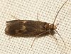

polycentropodidae

Definition: The Polycentropodidae are a family of trumpet-net and tube-making caddisflies. There are at least 30 genera and 720 described species in Polycentropodidae. The type genus for Polycentropodidae is Polycentropus J. Curtis, 1835.The larvae of this family construct complex silken tubes in which to live. These are short and flattened, and built in hollows in rocks or other submerged objects. They are surrounded by silken threads stretched across nearby surfaces. The larvae are carnivorous, remaining in the retreat until alerted by a small animal encountering a thread, and then rushing out to attack the prey. Members of the genus Polycentropus make slender, tubular structures among the tangled stems of aquatic plants, being alerted to the presence of prey that encounters the associated silken threads among the plants.
Source: Wikipedia
Wikipedia Page (Something wrong with this association? Let us know.)
Wikidata Page (Something wrong with this association? Let us know.)